Case Analysis: Amber Guyger, screenshots
Back to the site
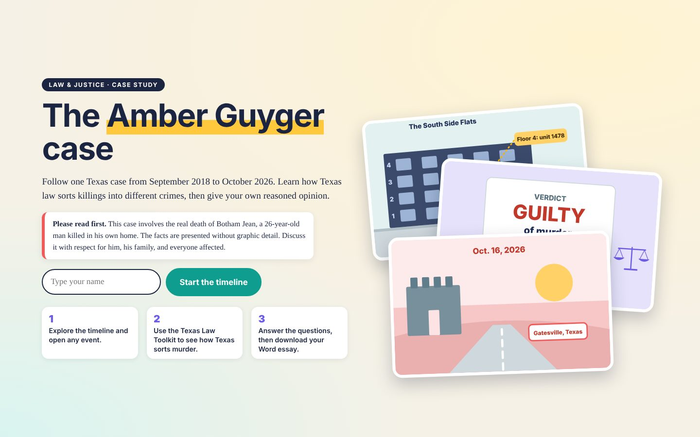
The cover, with a respectful content note The interactive timeline (zigzag, colored by Part)
The interactive timeline (zigzag, colored by Part)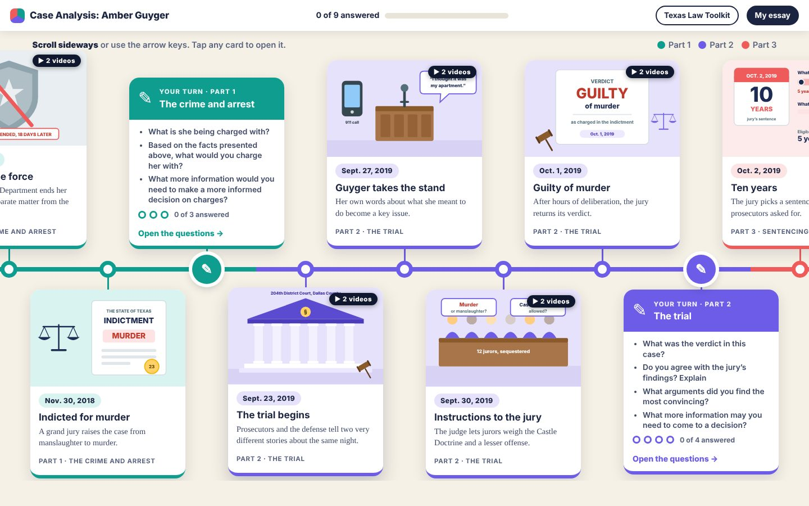
Timeline cards show a video badge where videos are available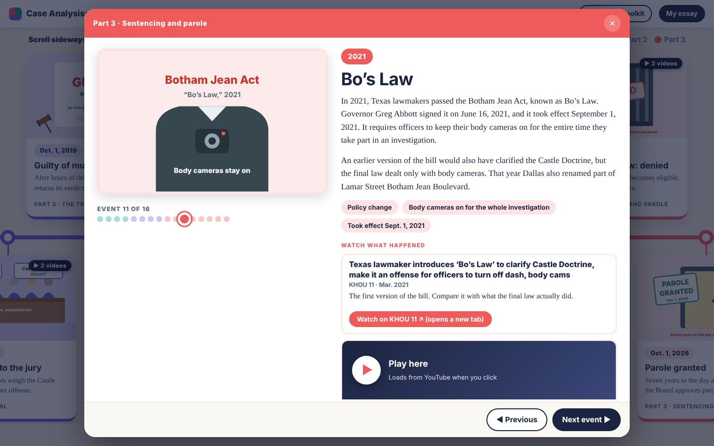
An event slide: illustration, facts, Texas law lens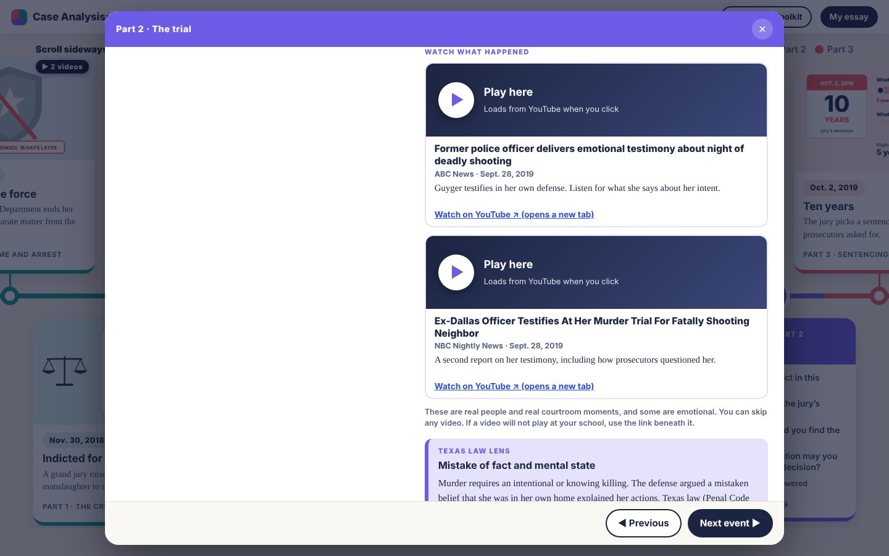
Click-to-play news and trial videos inside the event slide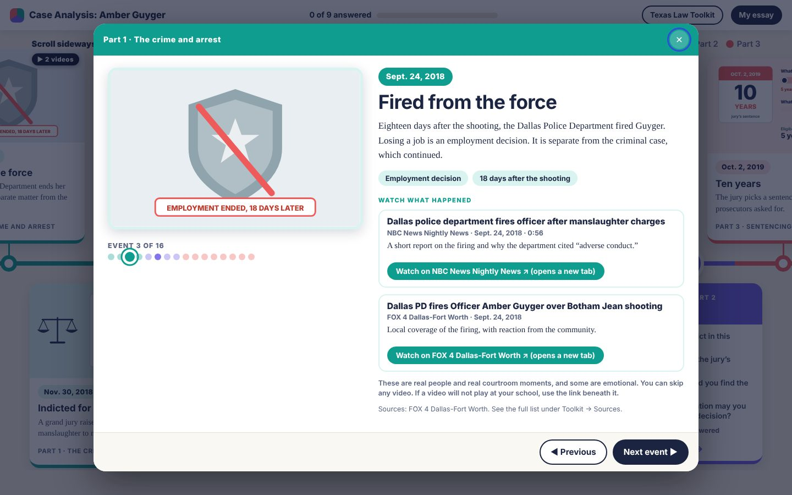
Videos from news sites open in a new tab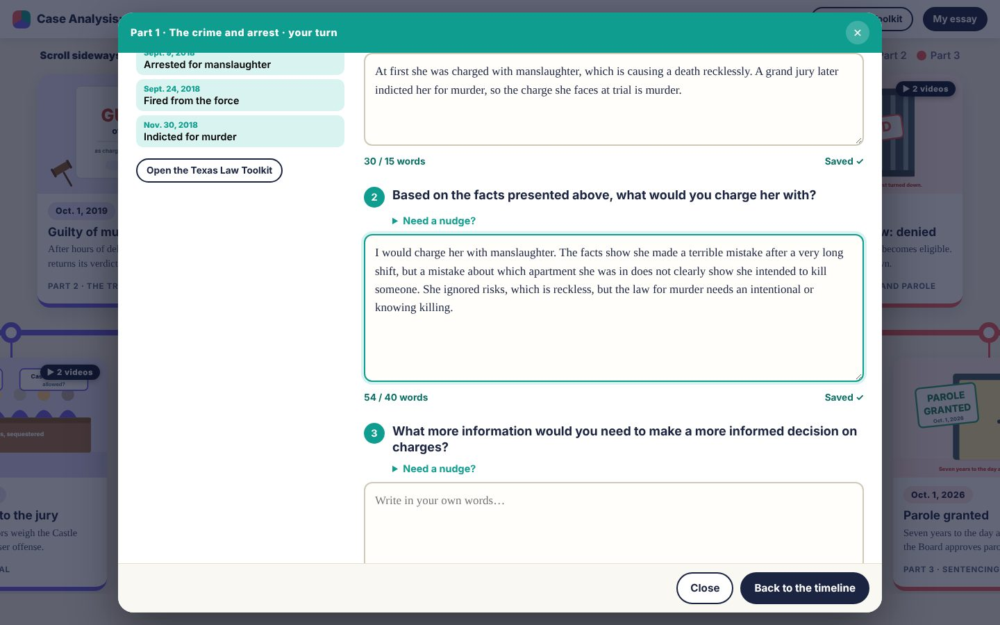
The writing panel: readings, key moments, your questions, autosave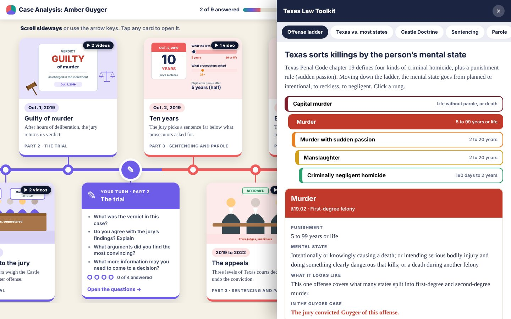
Toolkit: the Texas offense ladder and a quick check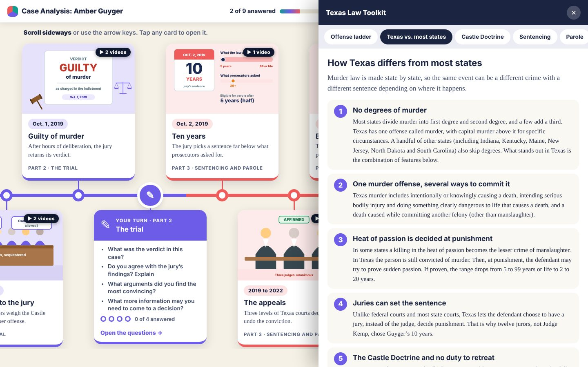
Toolkit: how Texas differs from most states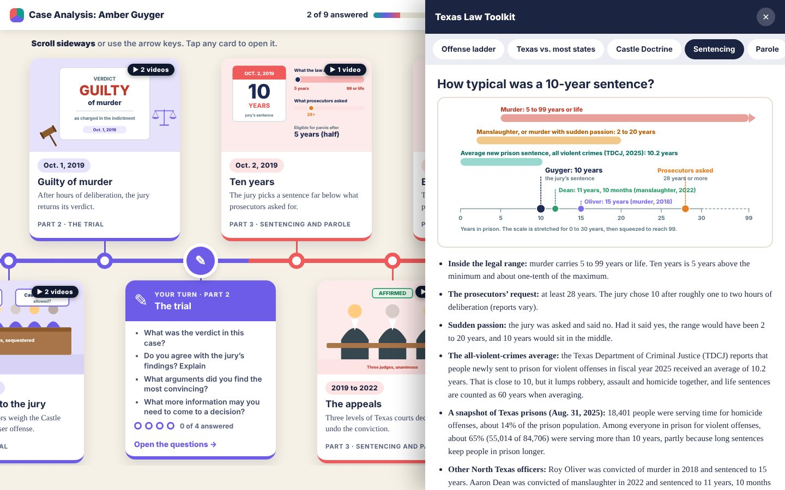
Toolkit: how typical was 10 years?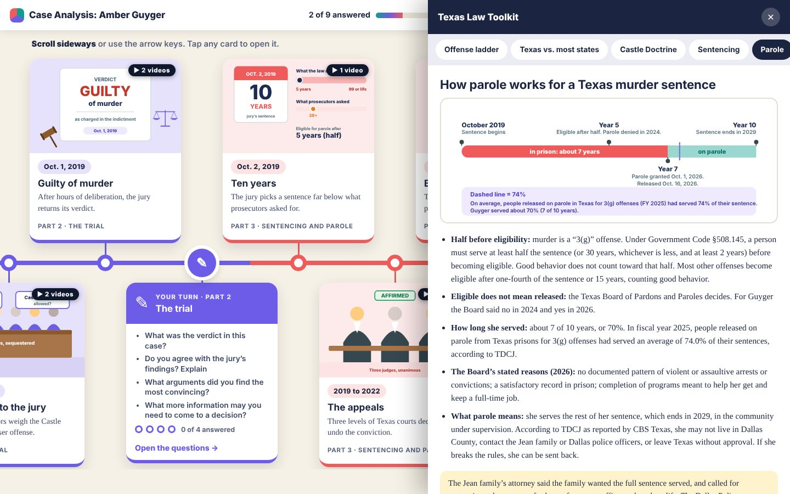
Toolkit: how parole works for a murder sentence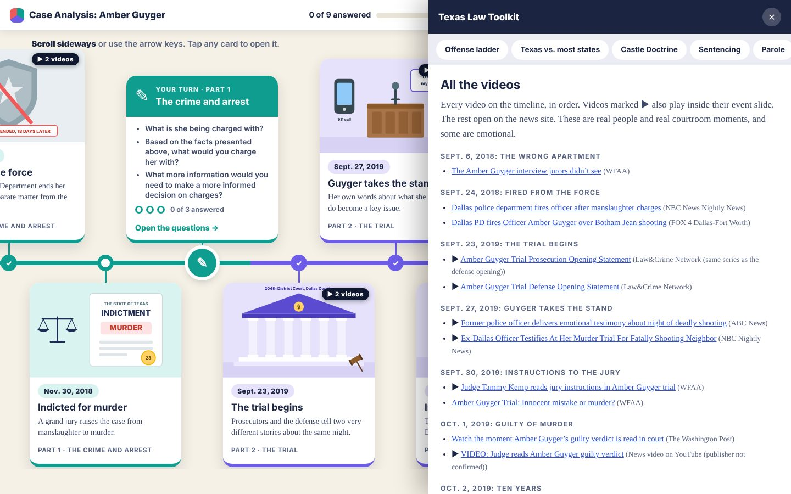
Toolkit: every video, in order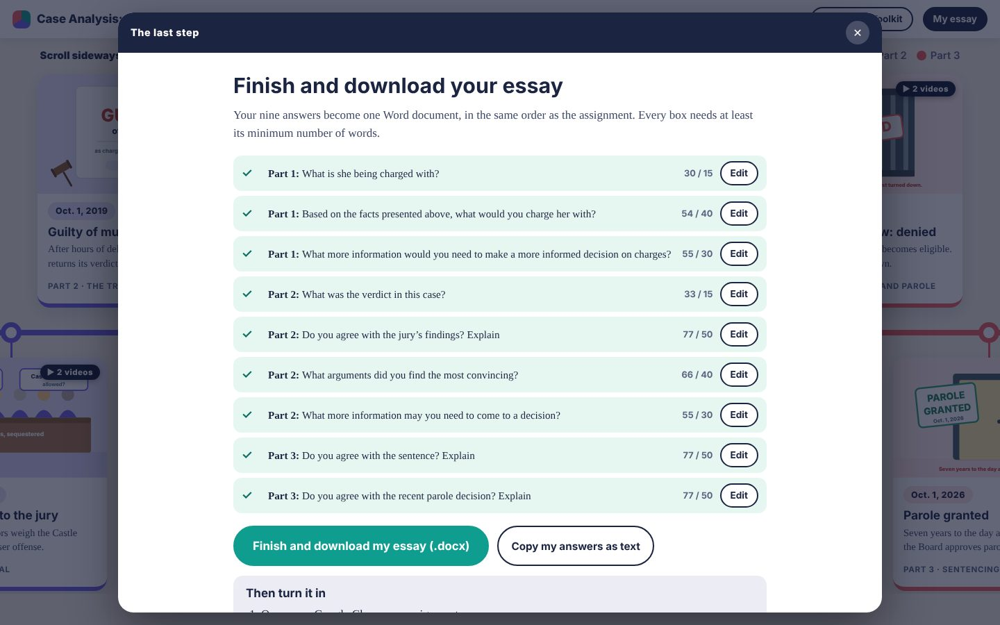
The finish checklist that builds the Word essay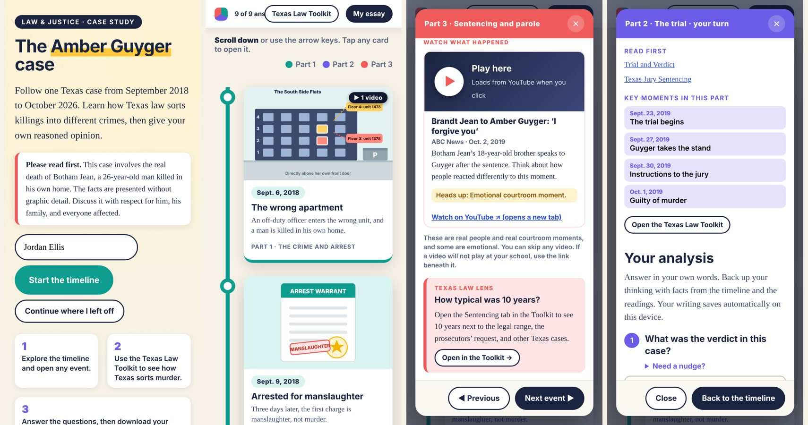
On a phone: a vertical timeline, with the same videos